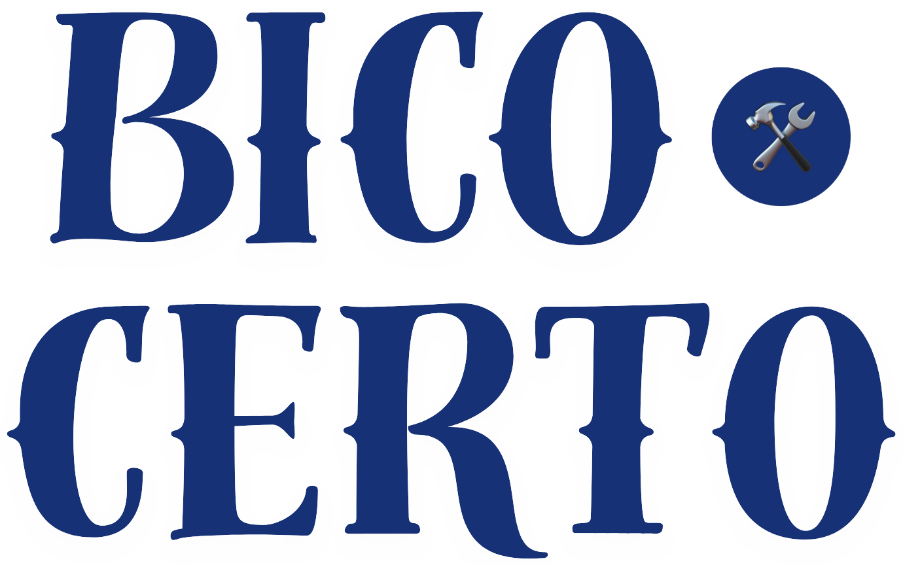

Sobre Nós
No Bico Certo, nossa missão é conectar trabalhadores informais com oportunidades que possibilitam a realização de seus talentos e habilidades. Com o crescente dinamismo do mercado de trabalho e as novas formas de empregabilidade, entendemos que muitas pessoas possuem habilidades valiosas, mas enfrentam desafios para encontrá-las e mostrar seu potencial ao mundo. Foi pensando nisso que criamos uma plataforma intuitiva e acessível, projetada para facilitar essa conexão e permitir que você maximize suas oportunidades de trabalho.
Quem Somos
Fundada em 2024, o Bico Certo nasceu do desejo de criar um espaço onde trabalhadores informais pudessem destacar suas ofertas de serviços de maneira clara e eficiente. Nossa equipe é composta por profissionais apaixonados pela inclusão e pelo empreendedorismo, com um profundo entendimento das necessidades e desafios enfrentados por aqueles que atuam fora do mercado formal.
Nosso time é diversificado e conta com especialistas em tecnologia, marketing, atendimento ao cliente e desenvolvimento comunitário. Trabalhamos em sinergia para garantir que nossa plataforma não apenas atenda às necessidades básicas, mas também ofereça recursos e suporte que incentivem o crescimento e o sucesso de nossos usuários.
Nossa Plataforma
O Bico Certo é mais do que uma simples plataforma de anúncios de serviços; é um verdadeiro ponto de encontro entre quem precisa e quem pode oferecer. Desenvolvemos uma interface amigável e prática, que permite a qualquer trabalhador informal listar seus serviços de forma detalhada e atraente. Aqui estão alguns dos principais recursos que oferecemos:
-
Cadastro Simplificado: Nosso processo de inscrição foi projetado para ser rápido e descomplicado. Quer você seja um eletricista, um jardineiro, um cozinheiro ou um artesão, você pode criar seu perfil em poucos minutos e começar a promover seus serviços imediatamente.
-
Perfis Personalizáveis: Oferecemos a possibilidade de criar perfis detalhados, onde você pode adicionar descrições, fotos, e informações de contato. Isso ajuda a destacar suas habilidades e experiências de forma que se diferencie da concorrência.
-
Sistema de Avaliações: Acreditamos que a reputação é fundamental. Por isso, implementamos um sistema de avaliações e feedback, onde clientes podem avaliar e deixar comentários sobre os serviços prestados. Isso não só ajuda a construir a confiança dos futuros clientes, mas também permite que você tenha um panorama das suas áreas de aprimoramento.
-
Facilidade de Contato: A comunicação direta entre prestador de serviços e cliente é essencial. Oferecemos ferramentas de chat e notificações para que você possa gerenciar suas consultas e agendamentos de maneira eficiente.
-
Suporte e Recursos: Além de uma plataforma robusta, disponibilizamos recursos educacionais e suporte contínuo. Oferecemos dicas sobre como otimizar seu perfil, como lidar com clientes e até mesmo sugestões de precificação. Nosso objetivo é fornecer todas as ferramentas necessárias para que você possa se destacar e prosperar.
Nossos Valores
Acreditamos que todos têm o direito de mostrar e valorizar suas habilidades. Por isso, o Bico Certo é guiada por valores fundamentais que moldam todas as nossas ações:
-
Inclusão: Valorizamos a diversidade e acreditamos que todos, independentemente de sua experiência ou formação, têm algo valioso a oferecer. Nossa plataforma é um espaço acolhedor para todos.
-
Transparência: Trabalhamos com total transparência em nossas práticas e políticas. Queremos que nossos usuários confiem em nós e sintam-se seguros ao utilizar nossos serviços.
-
Empoderamento: Nosso objetivo é empoderar trabalhadores informais, oferecendo-lhes ferramentas e recursos que promovam o desenvolvimento e o sucesso profissional.
-
Comunidade: Enxergamos nossos usuários como parte de uma grande comunidade. Promovemos a colaboração e o apoio mútuo, incentivando uma rede de troca de conhecimentos e experiências.
Junte-se a Nós
Estamos aqui para apoiar você em cada passo do caminho. Se você é um trabalhador informal em busca de novas oportunidades ou alguém que deseja contratar serviços de qualidade, o Bico Certo é o lugar certo para você. Explore nossa plataforma, conecte-se com clientes e colegas, e aproveite as vantagens que oferecemos.
Obrigado por escolher o Bico Certo. Estamos empolgados para fazer parte da sua jornada e ajudar você a alcançar seus objetivos profissionais. Vamos juntos transformar o futuro do trabalho informal!
Voltar à Página Inicial